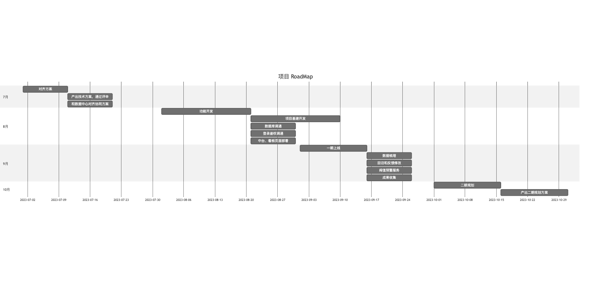

项目目标在于。保障前端工程质量、帮助工程师快速定位问题、记录安全员的关键操作。
在使用 THREE.js 构建的 Web 应用中，性能监控对于确保用户体验至关重要。随着 3D 场景的复杂性增加，渲染性能和资源使用情况可能会对用户体验产生显著影响。因此，构建一个针对 THREE.js 的性能监控系统是非常必要的。该系统将帮助开发团队实时监控 3D 应用的性能，捕获可能的性能瓶颈，并提供数据支持以优化应用。
此外，监控 JavaScript 内存占用和 Chrome 内存情况、长任务（Long Task）统计、主函数及主要模块函数的执行效率等也是提高性能的重要环节。
随着上路车辆越来越多，记录安全员在辅助驾驶平台关键操作（如鼠标点击、键盘按下、请求发起等）变得尤为重要。系统需要在没有用户ID的情况下，尽量区分来自不同设备的数据，并能够识别不同端（如 QA、司机端、teleGuidance）上的操作。
完善的都是商业化的平台，比较侧重商业分析和前端错误告警。大部分功能可能用不了。
开源的部分功能前端代码也是压缩的，不利于后面的二次开发。
独立的部署方案大部分都是docker独立部署，但是中心化的一些平台，和我们的业务场景可能不是很适配。
前端监控系统将包括以下模块：

performance.memory 接口获取内存使用情况。performance.mark() 和 performance.measure() 进行打点。| **技术领域** | **选型** | **简单性** | **高性能** | **扩展性** | **灵活性** |
| --- | --- | --- | --- | --- | --- |
| 前端框架 | React 或 Vue | 这两个框架的组件化设计使得模型简单，易于理解和使用。 | 经过优化的虚拟 DOM 提升了渲染性能，适合快速访问。 | 组件化结构便于水平扩展，能够轻松添加新功能。 | 提供丰富的插件和生态系统，灵活适应不同需求。 |
| 性能监控 SDK | THREE.js | 提供简单的 API，使得性能监控的集成变得容易。 | 针对 WebGL 渲染进行了优化，能够高效处理复杂场景。 | 支持多种扩展和插件，便于根据需求添加功能。 | 灵活的渲染设置和场景管理，适应不同的应用场景。 |
| 数据上报 | Beacon API | API 简单易用，能够轻松实现数据上报。 | 设计为异步、非阻塞，确保高效的数据传输。 | 适合与其他技术栈结合，便于扩展数据上报功能。 | 可与不同的前端框架和后端服务灵活集成。 |
| 后端框架 | Koa | 轻量级设计使得模型简单，易于上手。 | 基于 Node.js 的非阻塞特性，性能优越。 | 中间件架构便于水平扩展，支持多种功能模块。 | 灵活的中间件机制，能够根据需求定制功能。 |
| 数据库 | MongoDB | 文档模型简单，易于理解和操作。 | 针对高并发读写进行了优化，性能表现优异。 | 支持水平扩展，能够处理大规模数据。 | 灵活的文档结构，适应多种数据模型和查询需求。 |
| 时序数据库 | InfluxDB | 数据模型简单，专门针对时间序列数据设计。 | 针对快速写入和查询进行了优化，性能卓越。 | 设计为分布式架构，容易进行水平扩展。 | 灵活的查询语言，支持多种数据分析需求。 |
| 监控大盘 | ECharts | 界面友好，易于创建和管理图表，适合快速开发。 | 针对实时数据可视化进行了优化，响应快速。 | 支持多种数据源，便于扩展监控指标和图表类型。 | 提供丰富的图表类型和自定义功能，灵活适应不同需求。 |
| Monitoring Metrics | Description |
| --- | --- |
| **THREE.js Performance Metrics** | |
| Frames Per Second (FPS) | The number of frames rendered per second, reflecting rendering performance. |
| Rendering Time | The time taken to render each frame, affecting the frame rate. |
| Triangle Count | The total number of triangles in the scene, impacting rendering overhead. |
| Material Count | The number of materials in the scene; too many can affect performance. |
| Texture Count | The number of textures in the scene; large or excessive textures can impact performance. |
| Geometry Count | The number of geometries in the scene; too many can affect performance. |
| Light Count | The number of lights in the scene; too many can affect performance. |
| Object Count | The number of objects in the scene; too many can affect performance. |
| **Frontend Performance Metrics** | |
| First Contentful Paint (FCP) | The time from the start of rendering to the first content being painted. |
| Largest Contentful Paint (LCP) | The time from the start of rendering to the largest content being painted. |
| First Input Delay (FID) | The time from the first interaction by the user to the browser's response. |
| Cumulative Layout Shift (CLS) | A stability metric that measures unexpected shifts in page layout. |
| **Error Monitoring** | |
| JavaScript Runtime Errors | Captures JavaScript errors occurring on the page. |
| Network Request Errors | Monitors network request errors on the page, such as 404, 500, etc. |
| **User Behavior** | |
| Page Views | Counts the number of times a page has been accessed. |
| User Click Behavior | Records user click events. |
| Keyboard Press Events | Records user keyboard input events. |
| Request Initiation Events | Monitors network request events initiated by the user. |
| WebSocket Message Sending | Records messages sent by the user via WebSocket. |
| Page Scrolling and User Dwell Time | Records user dwell time on the page and scrolling behavior. |
| **Resource Monitoring** | |
| JavaScript Memory Usage | Monitors the memory usage of JavaScript on the page. |
| Chrome Memory Status | Monitors the memory usage of the Chrome browser. |
| Long Task Statistics | Tracks long tasks (tasks blocking the main thread for more than 50ms) on the page. |
| **Main Function Execution Time** | |
| Function Execution Time | Records the execution time of the main function or critical code paths. |
| Function Call Count | Tracks the number of times the main function or critical code paths are called. |
| Function Execution Frequency | Calculates the frequency of main function or critical code path executions. |
| Function Execution Latency | Measures the latency or delay in main function or critical code path executions. |
THREE.PerformanceMonitor）获取性能指标数据。window.onerror 捕获 JavaScript 错误。PerformanceObserver 监听长任务事件。navigator.sendBeacon() 进行数据上报，确保数据在页面卸载时也能被发送。


RoadMap
